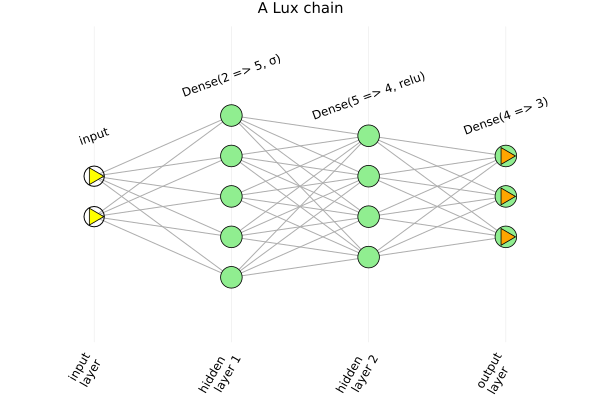
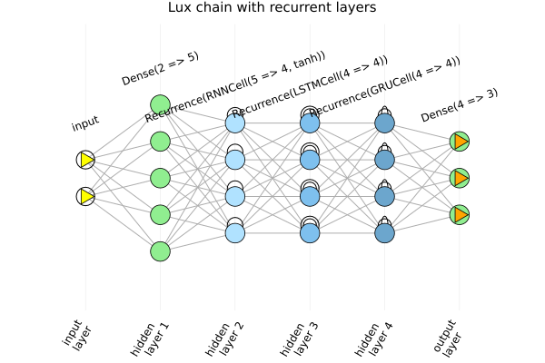
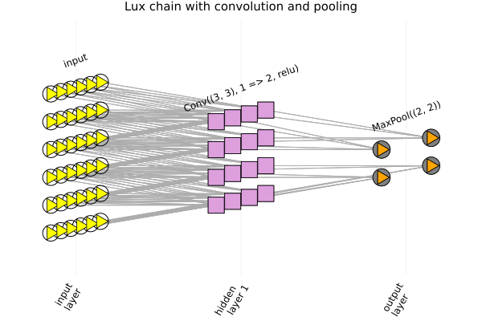

Lux models
ChainPlots also draws models built with Lux.jl, through a package extension that is loaded with Lux. chaingraph and plotchain accept a Lux.Chain or a single Lux layer, just as with Flux.
Lux layers keep no parameters; they are set up separately with Lux.setup. The graph only depends on the shapes of the parameters, not on their values, so ChainPlots sets them up itself, and there is no need to pass them.
Since both Lux and Flux export names such as Dense and Chain, Lux is imported, rather than used, here:
import Lux
using Plots
using ChainPlots
m = Lux.Chain(Lux.Dense(2 => 5, Lux.sigmoid), Lux.Dense(5 => 4, Lux.relu), Lux.Dense(4 => 3))
plotchain(m, title = "A Lux chain", titlefontsize = 10)
Recurrent layers
A recurrent cell wrapped in Lux.Recurrence is drawn folded, as a single time step, like the recurrent layers of Flux, with the marker of its cell:
m = Lux.Chain(
Lux.Dense(2 => 5),
Lux.Recurrence(Lux.RNNCell(5 => 4)),
Lux.Recurrence(Lux.LSTMCell(4 => 4)),
Lux.Recurrence(Lux.GRUCell(4 => 4)),
Lux.Dense(4 => 3)
)
plotchain(m, title = "Lux chain with recurrent layers", titlefontsize = 10)
A cell on its own returns a tuple (y, state), so, as with Flux, it can only be the last layer of a chain.
Variable-size input
If the first layer accepts inputs of any size, such as a convolutional layer or a Lux.WrappedFunction, an input, or its shape, is needed:
m = Lux.Chain(Lux.Conv((3, 3), 1 => 2, Lux.relu), Lux.MaxPool((2, 2)))
plotchain(m, (6, 6, 1, 1), title = "Lux chain with convolution and pooling", titlefontsize = 10)
The graph
The ChainGraph of a Lux model is the same as that of the corresponding Flux model, with the Lux names of the layers:
cg = chaingraph(Lux.Chain(Lux.Dense(2 => 3), Lux.Recurrence(Lux.LSTMCell(3 => 2))))ChainGraph with 7 neurons, 12 connections and 2 layers:
0: input layer (2,)
1: Dense(2 => 3) (3,)
2: Recurrence(LSTMCell(3 => 2)) (2,)